Drone AbitibiCette carte interactive superpose plusieurs couches issues d’une même mission de photogrammétrie : l’orthophoto pour la vue réaliste, un modèle numérique de terrain (DTM) pour le relief du sol nu, un modèle numérique de surface (DSM) qui inclut les objets présents (bâtiments, arbres). Activez ou désactivez les calques à l’aide du sélecteur dans la carte pour comparer les rendus.
Présentation simplifiée des données de vol pour une lecture rapide par le public. Les valeurs proviennent du même traitement OpenDroneMap 3.5.6 ayant servi à produire les couches affichées sur la carte.
Mission
Zone couverte
Positionnement
Qualité 3D